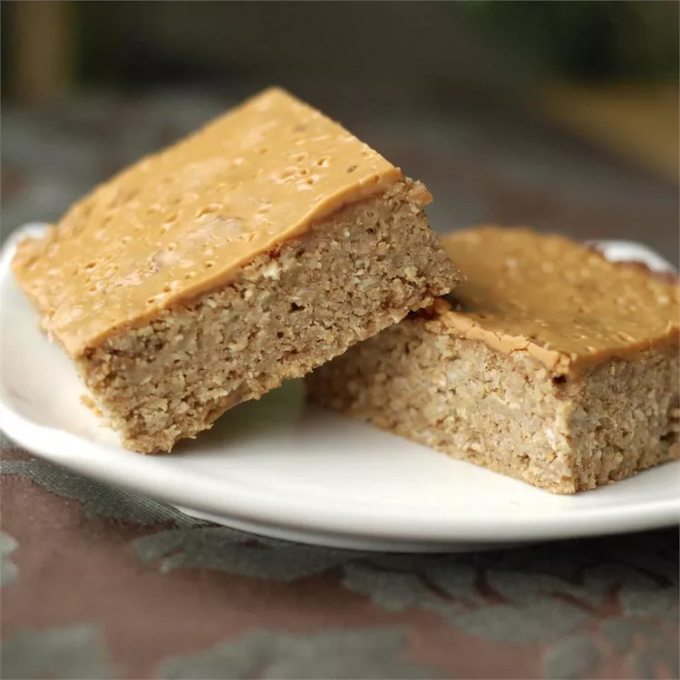

Protein Bar

Description
I came up with this recipe when my doctor told me
I needed to eat more fiber, and I was sick of eating
store-bought protein bars for breakfast in the car
between the gym and work. Ingredients such as wheat
germ, flaxseed, protein powder, peanut butter, and oats
make this a healthy way to start the day!
Ingredients
- cooking spray
- 1 ½ cups quick-cooking oats
- ¼ cup wheat germ
- ¼ cup ground flax seed
- 2 tablespoons vanilla-flavored hemp protein powder
- 1 teaspoon ground cinnamon
- ½ teaspoon salt
- 3 bananas
- ¼ cup peanut butter (such as Jif®)
- 2 tablespoons honey
- 1 teaspoon vanilla extract
- ¼ cup natural peanut butter, or to taste
Steps
- Preheat oven to 375 degrees F (190 degrees C).
Line an 8x8-inch baking dish with aluminum foil,
letting foil hang down over the sides of the pan;
spray pan with cooking spray.
- Stir oats, wheat germ, flax seed, protein powder,
cinnamon, and salt together in a bowl. Mash bananas
in a separate large bowl and stir 1/4 cup Jif
peanut butter, honey, and vanilla extract into
bananas, mixing well. Stir dry ingredients into
banana mixture and spread into the prepared baking
dish.
- Bake in the preheated oven for 20 minutes.
Spread 1/4 cup natural peanut butter over top.
- Continue baking until lightly browned on the
edges and set, 10 more minutes. Let cool in the
pan and lift bars onto a work surface using
aluminum foil as handles. Cut into bars, wrap
in plastic wrap, and store in refrigerator.